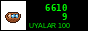

ABOUT --------------------------------------------------- radio tün started on 15.03.2024 because we were four people listening to music in four different rooms in two cities at 2 in the morning, and it seemed stupid. now we listen together. about 30-90 people a night. the record was 212 (02.11.2024, the night Kara Suu turned 20). this page is text only because: (a) it loads on anything (b) dj ottuk says pictures are a distraction (c) we can't draw contact: radio.tun@attelkom.net ---------------------------------------------------
[schedule] [about]